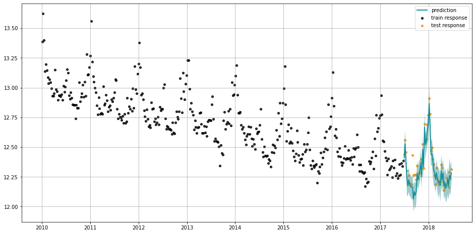
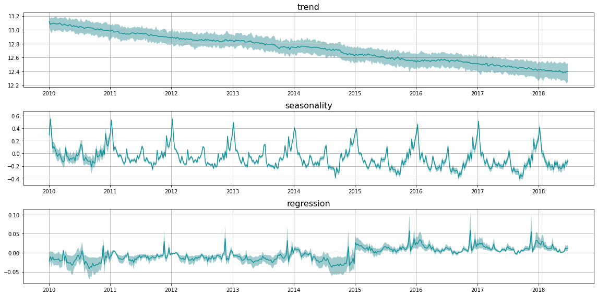

Local-Global-Trend(LGT) Example¶
[1]:
import pandas as pd
import numpy as np
from orbit.models.lgt import LGTMAP, LGTAggregated, LGTFull
from orbit.diagnostics.plot import plot_predicted_data
from orbit.diagnostics.plot import plot_predicted_components
Data¶
iclaims_example is a dataset containing the weekly initial claims for US unemployment benefits against a few related google trend queries from Jan 2010 - June 2018. This aims to mimick the dataset from the paper “Predicting the Present with Bayesian Structural Time Series” by SCOTT and VARIAN (2014).
Number of claims are obtained from Federal Reserve Bank of St. Louis while google queries are obtained through Google Trends API.
[2]:
DATA_FILE = "./data/iclaims_example.csv"
date_col = 'week'
response_col = 'claims'
df = pd.read_csv(DATA_FILE, parse_dates=[date_col])
df.dtypes
[2]:
week datetime64[ns]
claims int64
trend.unemploy float64
trend.filling float64
trend.job float64
dtype: object
We preprocess the data by log transformation to turn model from additive to multiplicative.
[3]:
df[['claims', 'trend.unemploy', 'trend.filling', 'trend.job']] =\
df[['claims', 'trend.unemploy', 'trend.filling', 'trend.job']].apply(np.log)
[4]:
df.head(5)
[4]:
| week | claims | trend.unemploy | trend.filling | trend.job | |
|---|---|---|---|---|---|
| 0 | 2010-01-03 | 13.386595 | 0.168876 | -0.328309 | 0.113033 |
| 1 | 2010-01-10 | 13.624218 | 0.168876 | -0.204695 | 0.164326 |
| 2 | 2010-01-17 | 13.398741 | 0.185136 | -0.302334 | 0.113033 |
| 3 | 2010-01-24 | 13.137549 | 0.152346 | -0.204695 | 0.102451 |
| 4 | 2010-01-31 | 13.196760 | 0.083354 | -0.252323 | 0.070016 |
Train / Test Split¶
[5]:
test_size=52
train_df=df[:-test_size]
test_df=df[-test_size:]
[6]:
train_df.head(5)
[6]:
| week | claims | trend.unemploy | trend.filling | trend.job | |
|---|---|---|---|---|---|
| 0 | 2010-01-03 | 13.386595 | 0.168876 | -0.328309 | 0.113033 |
| 1 | 2010-01-10 | 13.624218 | 0.168876 | -0.204695 | 0.164326 |
| 2 | 2010-01-17 | 13.398741 | 0.185136 | -0.302334 | 0.113033 |
| 3 | 2010-01-24 | 13.137549 | 0.152346 | -0.204695 | 0.102451 |
| 4 | 2010-01-31 | 13.196760 | 0.083354 | -0.252323 | 0.070016 |
MAP Fit and Predict¶
[7]:
lgt=LGTMAP(
response_col=response_col,
date_col=date_col,
seasonality=52,
seed=8888,
)
[8]:
%%time
lgt.fit(df=train_df)
CPU times: user 235 ms, sys: 14.7 ms, total: 249 ms
Wall time: 511 ms
[9]:
predicted_df = lgt.predict(df=test_df)
[10]:
plot_predicted_data(training_actual_df=train_df, predicted_df=predicted_df,
date_col=date_col, actual_col=response_col,
pred_col='prediction',
test_actual_df=test_df)

MCMC Fit and Predict¶
[11]:
lgt=LGTFull(
response_col=response_col,
date_col=date_col,
seasonality=52,
seed=8888,
prediction_percentiles=[5, 95],
)
[12]:
%%time
lgt.fit(df=train_df)
WARNING:pystan:Maximum (flat) parameter count (1000) exceeded: skipping diagnostic tests for n_eff and Rhat.
To run all diagnostics call pystan.check_hmc_diagnostics(fit)
WARNING:pystan:1 of 100 iterations ended with a divergence (1 %).
WARNING:pystan:Try running with adapt_delta larger than 0.8 to remove the divergences.
CPU times: user 75.8 ms, sys: 67.9 ms, total: 144 ms
Wall time: 8.02 s
[13]:
predicted_df = lgt.predict(df=test_df)
[14]:
predicted_df.tail(5)
[14]:
| week | prediction_lower | prediction | prediction_upper | |
|---|---|---|---|---|
| 47 | 2018-05-27 | 12.099949 | 12.232984 | 12.330652 |
| 48 | 2018-06-03 | 12.060341 | 12.173674 | 12.293869 |
| 49 | 2018-06-10 | 12.118473 | 12.262561 | 12.408782 |
| 50 | 2018-06-17 | 12.097858 | 12.239122 | 12.341881 |
| 51 | 2018-06-24 | 12.193468 | 12.281816 | 12.383324 |
[15]:
plot_predicted_data(training_actual_df=train_df, predicted_df=predicted_df,
date_col=lgt.date_col, actual_col=lgt.response_col, pred_col='prediction',
test_actual_df=test_df)

Fit with Regressors & Decmpose Prediction¶
Fit with regressors¶
[16]:
lgt=LGTFull(
response_col=response_col,
regressor_col=['trend.unemploy', 'trend.filling'],
date_col='week',
seasonality=52,
seed=8888,
prediction_percentiles=[5, 95],
)
[17]:
%%time
lgt.fit(df=train_df)
WARNING:pystan:Maximum (flat) parameter count (1000) exceeded: skipping diagnostic tests for n_eff and Rhat.
To run all diagnostics call pystan.check_hmc_diagnostics(fit)
WARNING:pystan:1 of 100 iterations ended with a divergence (1 %).
WARNING:pystan:Try running with adapt_delta larger than 0.8 to remove the divergences.
CPU times: user 79.2 ms, sys: 78.6 ms, total: 158 ms
Wall time: 11 s
Decompose Prediction¶
We can use decompose=True to decompose prediction into trend, seasonality and regression components. This command only works with point estimate.
[18]:
# make prediction in both train and test period
predicted_df = lgt.predict(df=df, decompose=True)
predicted_df.tail(5)
[18]:
| week | prediction_lower | prediction | prediction_upper | trend_lower | trend | trend_upper | seasonality_lower | seasonality | seasonality_upper | regression_lower | regression | regression_upper | |
|---|---|---|---|---|---|---|---|---|---|---|---|---|---|
| 438 | 2018-05-27 | 12.119054 | 12.203723 | 12.343520 | 12.272316 | 12.377795 | 12.522458 | -0.222905 | -0.165211 | -0.126634 | 0.000050 | 0.001649 | 0.003483 |
| 439 | 2018-06-03 | 12.057940 | 12.162210 | 12.301245 | 12.273331 | 12.394239 | 12.543182 | -0.289455 | -0.231388 | -0.181169 | 0.002061 | 0.004089 | 0.006654 |
| 440 | 2018-06-10 | 12.158842 | 12.266944 | 12.379922 | 12.258279 | 12.383312 | 12.525878 | -0.191039 | -0.133754 | -0.090308 | 0.004898 | 0.012213 | 0.020513 |
| 441 | 2018-06-17 | 12.112266 | 12.235203 | 12.343670 | 12.223513 | 12.398253 | 12.504536 | -0.220066 | -0.162596 | -0.118805 | 0.003326 | 0.010661 | 0.017965 |
| 442 | 2018-06-24 | 12.149563 | 12.271930 | 12.400532 | 12.245676 | 12.398791 | 12.521075 | -0.175234 | -0.120847 | -0.078531 | 0.005390 | 0.012118 | 0.020016 |
[19]:
plot_predicted_components(predicted_df=predicted_df, date_col=date_col)
